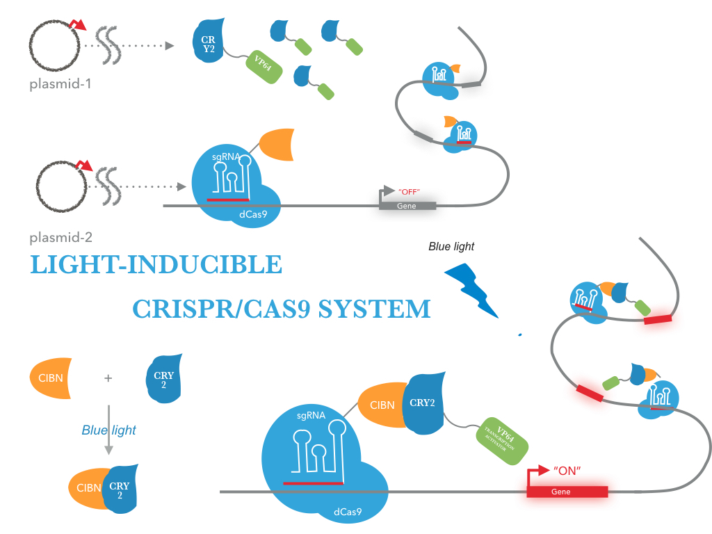

light-inducible CRISPR/Cas9 system
The NEU-China iGEM team sought to create a new mode of gene editing and manipulation for use in prokaryotic and lower eukaryotic cells . We fused two light-activated plant proteins, CRY2 or CIB1, to a transcriptional activator VP64 or the catalytic domain deleted tCas9 , generating CRY2-VP64 or CIB1-tCas9 chimeric constructs. In the presence of a specific gRNA guide, the tCas9 domain from CIB1-tCas9 binds to the promoter of a reporter gene. Once exposing to blue light, the CRY2 domain from CRY2-VP64 can form a protein complex with CIB1-tCas9, which in turn brings the VP64 domain to the chromatin and activates the reporter gene.
Over the summer, we accomplished the following:
Getting CRY2 and CIB1 gene from Arabidopsis thaliana
Total RNA was isolated from Arabidopsis thaliana and mRNA was reversely transcribed into cDNA. CRY2 and CIB1 gene was amplified with the specific primers.
Creating/Testing prokaryotic tCas9-CIBN chimeric constructs
We constructed tCas9-CIBN chimeric constructs gene with an prokaryotic RBS sequence from the Community collection(BBa_B0034). For detection of expression the fusion protein was tagged with a HA-epitope coding sequence (BBa_K1150016)
Creating/Testing prokaryotic CRY2-VP64 chimeric constructs
We constructed CRY2-VP64 chimeric constructs gene with an prokaryotic RBS sequence from the Community collection(BBa_B0034). For detection of expression the fusion protein was tagged with a FLAG-epitope coding sequence (gactacaaggacgacgacgacaaa)
Creating/Testing prokaryotic tCas9-VP64 chimeric constructs
To address these limitations, we adapted the CRISPR/Cas9 activator system for optogenetic control. We constructed tCas9-VP64 chimeric constructs gene with an prokaryotic RBS sequence from the Community collection(BBa_B0034). For detection of expression the fusion protein was tagged with a FLAG-epitope coding sequence (gactacaaggacgacgacgacaaa)
Testing Cas9-VP64
We tested our Cas9-VP64 fusion protein by transfecting it into BL21 cells along with a guide RNA which will target the Cas9-VP64 to upstream regulatory sites on our reporter construct and activate the expression of GFP. We showed that our Cas9-VP64 fusion is indeed functional.
Verification of the suppression efficiency of gRNAs
To ensure the suppression efficiency of the gRNA,four gRNA sequences targeting different sites of CSPA promoter were designed and transfected into the E. coli strains BL21. Efficient suppression of CSPA promoter in strains BL21 was observed.GFP levels in GFP transgenic strains decrease after inserting a fragment that expresses CSPA promoter gRNA .And the sequence with the best suppression effect was selected for further study.
Silencing capability validation
We next evaluated the effect of tCas9-cibn on suppressing CSPA promoter.GFP expression levels were assayed in strains BL21 after co-transformation with tCas9-cibn and gRNA in the absence of light conditions. Compared with control groups, Green fluorescence intensity and mRNA levels were dramatically reduced in groups treated with gRNA and tCas9-cibn.These results suggest that gRNA can specifically guide tCas9 to target upstream of CSPA promoter, thereby inhibiting CSPA promoter to reduce GFP expression levels.
Testing tCas9-VP64
We tested our Cas9-VP64 fusion protein by transfecting it into BL21 cells along with a guide RNA which will target the Cas9-VP64 to upstream regulatory sites on our reporter construct and activate the expression of GFP. We showed that our Cas9-VP64 fusion is indeed functional.
Application:light-inducible Gene Activation
We construct this new system in prokaryotic cells and to explore the optimal combination of these two techniques in order to enable the most efficient gene regulation with light. We have already produced a GFP expression system which is blue light inducible in E.Coli. Activating a gene would require targeting an activator to a sequence upstream of a promoter. tCas9 allows us to target arbitrary sequences using a guide RNA specific to that sequence.
We also Improved a previous iGEM project
We introduce CRY2 (BBa_K1592015) and CIB1 (BBa_K1592016) of them. This biobrick is Key BioBrics in "Photoreceptor" project. CIB1 encodes a basic helix-loop-helix (bHLH) protein,would interact with cryptochrome 2 (CRY2), a blue light stimulated photoreceptor, when exposed to blue light.This fusion protein is for use in a yeast-two-hybrid system, and a Gal4 DNA activating domain fused to N terminus of CIB1. To regulate DNA transcription by blue light, the system is based on a two-hybrid interaction in which a light-mediated protein interaction brings together two halves (a binding domain and an activation domain) of a split transcription factor.
We improved the function of CRY2 (BBa_K1592015) and CIB1 (BBa_K1592016) and enter our parts(BBa_K1982005 and BBa_K1982004) in the Registry. Please see the Registry page on this two parts.